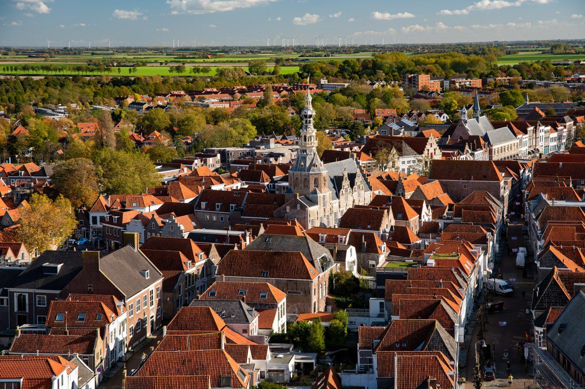
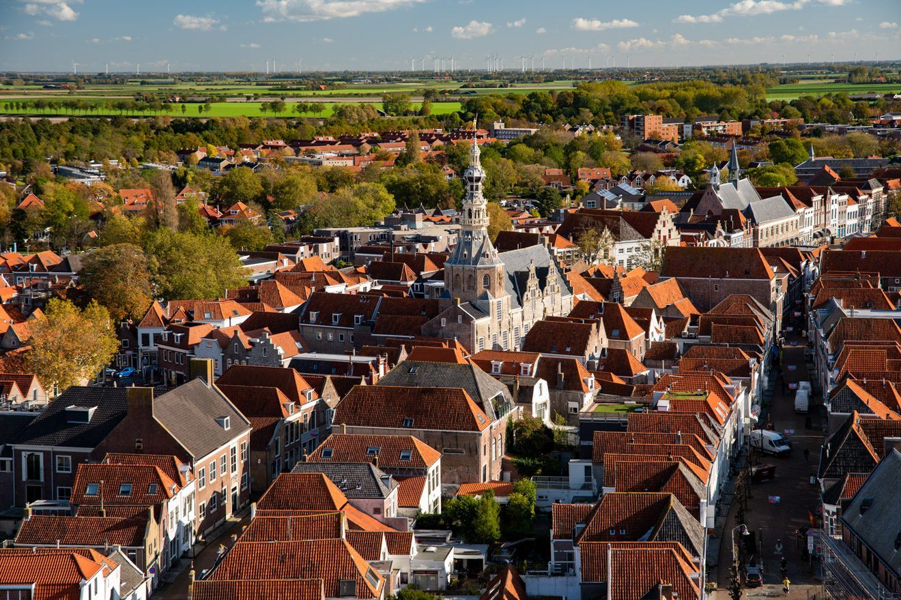

Zierikzee
Zierikzee (Zeeuws: Zurrikzeê) is een stad in de gemeente Schouwen-Duiveland in de Nederlandse provincie Zeeland. De stad telt 11.630 inwoners (1 januari 2021) en is de hoofdplaats en tevens grootste plaats van de gemeente.
De naam van Zierikzee is te herleiden tot een samenstelling van de persoonsnaam 'Siric' en het Oudnederlandse 'aa' of 'aha' dat 'water' betekent. Siric of Sigiric is een oude Germaanse naam, en een samenstelling van de twee delen 'sigi' (zege of overwinning) en 'ric' (rijk, veel). Toen men de genitief -s in 'Sirics Ee' ("de Ee van Siric") niet meer als zodanig herkende, werd het laatste deel opgevat als 'See' in plaats van Ee (of Aa), leidend tot de huidige spelling met -z.
Bron: wikipedia
Geschiedenis
In 976 komt Zierikzee onder de naam Creka (kreek) voor in een oorkonde waarin de Sint-Baafsabdij door keizer Otto II wordt bevestigd in haar bezittingen. De naam Zierikzee komt voor het eerst voor, als Siricasha, in een oorkonde uit 1156.
In 1248 werden de stadsrechten van Zierikzee door graaf Willem II van Holland bevestigd en uitgebreid. De eerste stadsrechten waren verleend tussen 1217 en 1220 maar de precieze datum is niet bekend. Aan het einde van de middeleeuwen was Zierikzee een strategisch belangrijke plaats in Zeeland en omgeving.
In 1303 en 1304 werd de stad meerdere malen belegerd door Vlaamse troepen onder leiding van Gwijde van Namen. De Vlamingen slaagden er niet in Zierikzee in te nemen en werden uiteindelijk verslagen in de slag bij Zierikzee op 11 augustus 1304 door een Zeeuws-Franse vloot, waarbij Gwijde van Namen werd gevangengenomen. Het jaar daarop werd op 23 juni 1305 het Verdrag van Athis-sur-Orge tussen graafschap Vlaanderen en het koninkrijk Frankrijk afgesloten om beider machtsverhoudingen te regelen.
In 1414, 1458, 1466, 1526 en 1576 vonden in Zierikzee grote stadsbranden plaats. In 1414 brandde de helft van de stad af. In 1458 viel het beste deel van de stad, waaronder het Begijnhof en het klooster van de Franciscanen, Minderbroederklooster ten prooi aan de vlammen. In 1466 brandde een derde van de stad af, waaronder de Grote Kerk. In 1526 en 1576 bedroeg de schade respectievelijk 77 zoutketen en 125 huizen buiten de muren van de stad (1526) en 50 zoutketen en 200 huizen (1576).
In de Tachtigjarige Oorlog werd Zierikzee op 8 augustus 1572 door geuzen ingenomen. In september 1575 landden Spaanse troepen op Schouwen en Duiveland, en sloegen het beleg voor Zierikzee. De stad gaf zich over op 29 juni 1576, maar vier maanden later ontstond er muiterij onder de Spaanse soldaten wegens achterstallige betalingen, waarna de Spanjaarden vertrokken.
Op 1 januari 1735 werd in de stad een slavenkas in het leven geroepen om gevangen genomen Zierikzeese zeelui vrij te kopen. Het gebeurde in de 18e eeuw vaak dat zeelieden tot slaaf werden gemaakt door Barbarijse zeerovers. De slavenkas bleef bestaan, ook nadat in de 19e eeuw een einde werd gemaakt aan de Arabische slavenhandel. Na de watersnoodramp van 1953 werd met het geld van de Slavenkas de bouw van twee nieuwe kleuterscholen gefinancierd.
Tijdens de Eerste Wereldoorlog werden op 30 april 1917 door een verdwaalde Britse piloot zes bommen op de stad geworpen. De piloot had Zierikzee verward met Zeebrugge, er vielen drie slachtoffers. Na de Tweede Wereldoorlog werd bij Zierikzee zo'n 30 miljoen kilo munitie in de Oosterschelde gedumpt, waarmee deze munitiestort de grootste van Nederland is. Na de Tweede Wereldoorlog is de stad eerst in oostelijke richting met Plan Malta, daarna met de bouw van de wijk Poortambacht ("Plan West") in westelijke richting uitgebreid.
In 1997 hield de gemeente Zierikzee op te bestaan en werd de gemeente onderdeel van de grotere gemeente Schouwen-Duiveland. Het gemeentehuis van deze gemeente bevindt zich in Zierikzee. Een kenmerk ervan is dat het topzwaar lijkt doordat het naar boven toe breder uitloopt. Het gemeentehuis is gelegen aan de Laan van Sint Hilaire, zo'n 800 meter van de Dikke Toren vandaan.
De gemeente Schouwen-Duiveland is flink bezig met het uitbreiden en moderniseren van Zierikzee, zo worden er binnen de grachten woonwijken vernieuwd, en worden er buiten de grachten woonwijken bijgebouwd, ook wordt het centrum vernieuwd. In 2014 is langs de N256 het Business Park Zierikzee geopend, met onder meer het nieuwe hoofdkantoor van Omoda.
Op maandag 27 juni 2022 werd de stad getroffen door een windhoos die behoorlijk wat schade met zich mee bracht. Er viel daarbij een dodelijk slachtoffer te betreuren. Verschillende daken werden afgerukt en trampolines vlogen door de lucht. Er was dus een aanzienlijke materiële schade.
Bron: wikipedia


 
